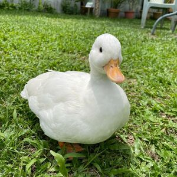
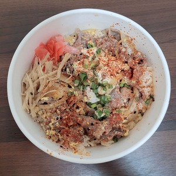
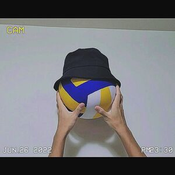
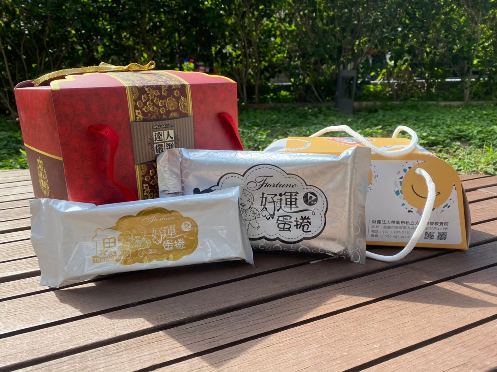
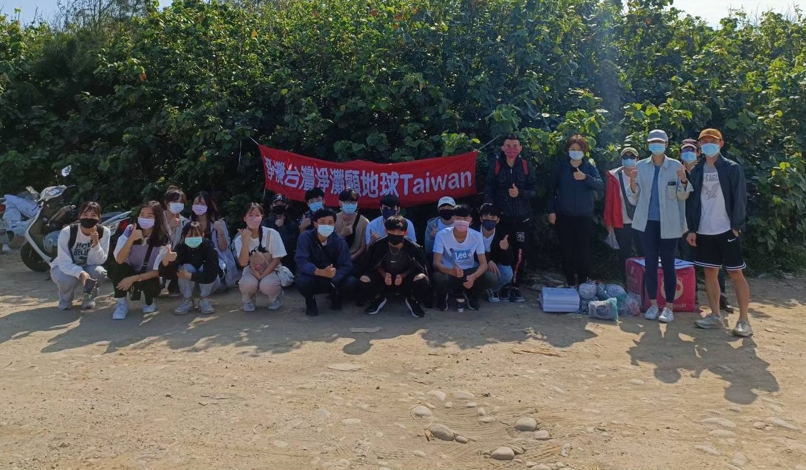
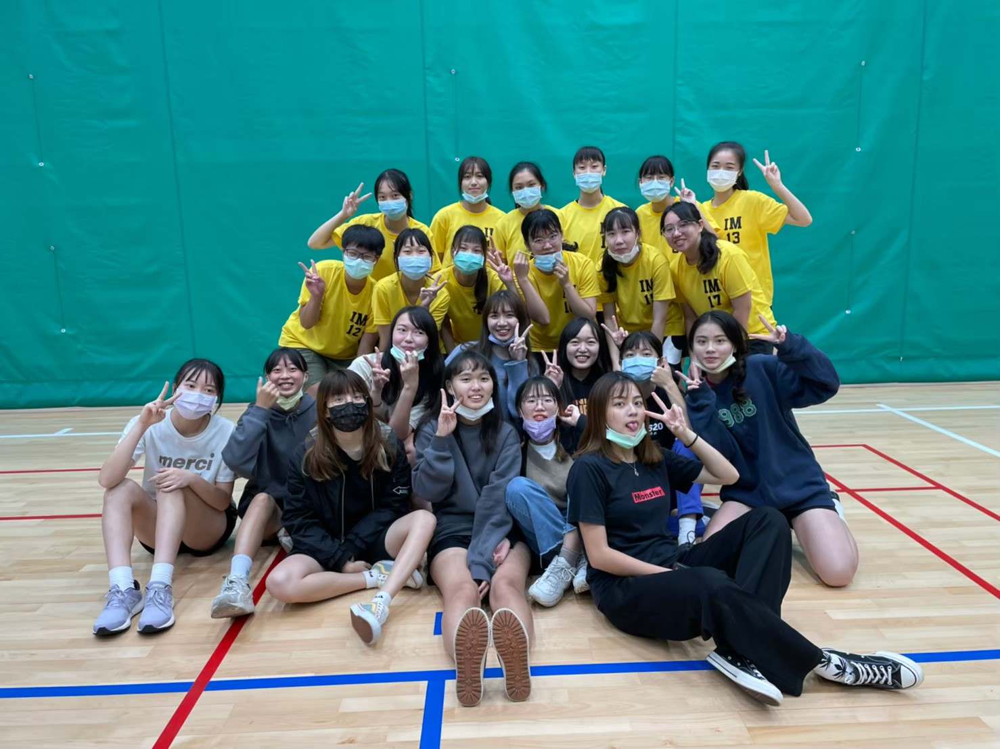
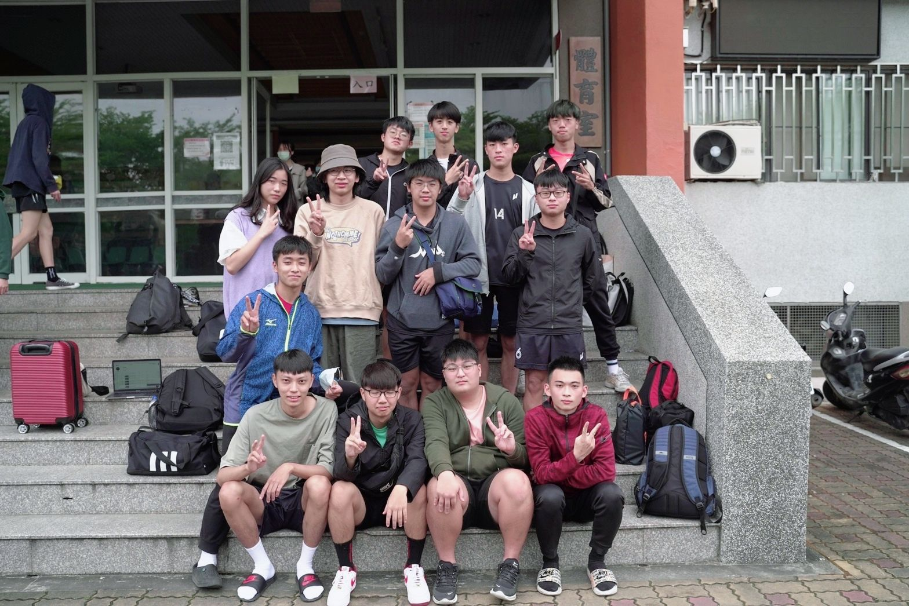
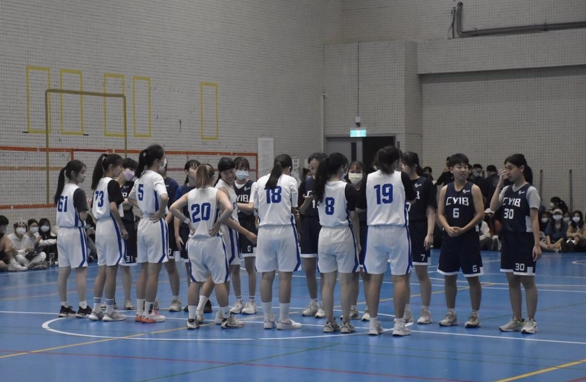

Introduction



我的興趣有很多，像是吃東西、玩fps遊戲跟打排球，最近會去健身房。
我喜
歡鴨子，因為牠們白白肥肥的很可愛，我的ig首頁有滿滿的鴨子。 我永遠睡
不飽，醒著就想睡覺，我很常被講臭臉，但我真的只是想睡覺 而已嗚嗚嗚。
希望可以過著想吃什麼就吃什麼的生活，然後住在遊樂園隔壁。
歡鴨子，因為牠們白白肥肥的很可愛，我的ig首頁有滿滿的鴨子。 我永遠睡
不飽，醒著就想睡覺，我很常被講臭臉，但我真的只是想睡覺 而已嗚嗚嗚。
希望可以過著想吃什麼就吃什麼的生活，然後住在遊樂園隔壁。
Background
❤
永順國小
(民國97年~103年)
(民國97年~103年)
❤
慈文國中
(民國104年~106年)
(民國104年~106年)
❤
桃園高中
(民國107年~109年)
(民國107年~109年)
❤
中原大學
(民國110年~至今)
(民國110年~至今)
Skills
Programming skills:
HTML
30%
CSS
30%
JAVA
50%
Python
40%
C
20%
Personal skills:
Sleep
70%
Eat
80%
Volleyball
50%
Games
40%
Pool
40%
Projact
大一上

大一上的企業概論要分組活動，每個小組各為一個公司，
要負責販售抽到的產品。我們這組很幸運的抽到蛋捲，相對其他組，
蛋捲的確是非常好銷售的產品。經過每個禮拜的開會和構思，
我們在十一月的時候在教學大樓一樓開賣，因為我們太害羞了攔不住人，大部分都是系上認識的學長姊跟我們買，
雖然最後蛋捲沒有賣完，不過我們還是有盈餘，對我來說是個很特別的體驗。
大一下

大一下的管理學也是要以組為單位去做志工，那時候因為疫情，很多志工都不能做，
幸好最後可以去後厝港淨灘。那天天氣非常好，後厝港很漂亮，但沿岸很多垃圾，我們撿了兩個小時的垃圾還撿不完，自從淨灘後我就意識到環保的重要性
，也開始使用環保袋和環保杯。淨灘結束後我們一群人還跑到新北去玩，是個做志工兼出遊的一天。
Experience
系女排

這張是我大一打新生盃的時候拍的，雖然結果不是我想要的，但從那場比賽後，
我走上了漫長的排球之路。每個禮拜兩次晚練一次晨練，累得跟狗一樣還是沒有想退隊，可能我是真的很喜歡打排球吧。
除了能鍛鍊身體外，我交到了很多朋友，排球是團體運動，不是一個人強就可以，需要場上六個人互相合作、
互相包容。可以說，排球佔據了我一半的大學生活。
男排球經

原本只是想去看男排新生盃的，莫名其妙被拉去當球經，還當天上工哈哈。
說是當球經，其實是蹭球仔，有時候會跟他們一起練球，或借一顆球在旁邊對牆。
因為疫情，很多大大小小的比賽都被取消了，這張是大一唯一參加到的比賽。
那天我看到很多來自不同學校的男女排比賽，很興奮，可以看到不同類型的比賽。台中的天氣很好，
三天比賽都是晴天，也是我第一次在台中玩跟過夜。
系籃新生盃

我在系排練球的時候有個學姊覺得我很高問我要不要打系籃的新生盃，
我覺得蠻有趣的就加了。一開始的練習對我來說很折磨，因為我的體力非常差，
一次要練四個半小時，累到每次回到家倒頭就睡了，連比賽都要打兩個禮拜，我們系的體保
非常強，帶領我們打了四五場到冠亞賽最後得冠，很開心，覺得之前的苦都值
得了，也認識了一群朋友。